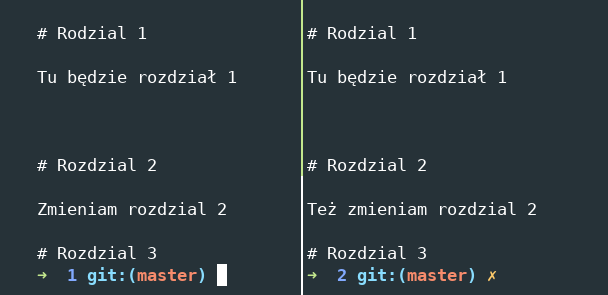
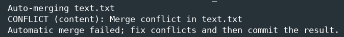
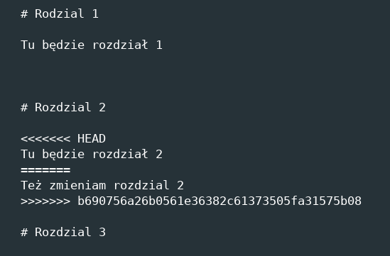

VCS - system kontroli wersji
Zarządzanie kodem
Dzielenie się kodem
Szybsze znajdywanie bugów
Do dowolnego projektu grupowego
Do chwalenia się kodem na gitlabie/githubie
Na każdej rekrutacji do pracy pytają o gita
Dobry nawyk na backup swojej osobistej pracy
Repozytorium hostowane na GitHubie
Kilka osób pracujących jednocześnie
Wysyłanie i pobieranie kodu z/do repozytorium
Rozwiązywanie merge conflictów
git clone <adres>Po prostu pobiera repozytorium
git statuspokazuje co się dzieje
$ git status
On branch master
No commits yet
nothing to commit (create/copy files and
use "git add" to track)
Untracked files:
(use "git add <file>..." to include
in what will be committed)
file.cpp
git add -ADodaje wszystkie zmiany do snapshota
git add ścieżka/do/pliku.cpp
doda pojedynczy plik
git add ścieżka/do/folderu
doda wszystkie zmiany w folderze
git status po dodaniu plikówChanges to be committed:
(use "git rm --cached <file>..." to unstage)
new file: file.cpp
git commit -m "Opis zmian"
Zapisuje aktualnie dodane zmiany do commmita
i nadaje mu wybraną przez Was nazwę.
git status po zrobieniu commitaOn branch master
nothing to commit, working tree clean
git push
Wysłanie swoich commitów na serwer.
git pull
Pobranie cudzych zmian z serwera.
# Rozdział 1
Tu będzie rozdział 1
# Rozdział 2
Tu będzie rozdział 2
# Rozdział 3

git pull

(...)
# Rozdzial 2
<<<<<<< HEAD
Tu będzie rozdział 2
=======
Też zmieniam rozdzial 2
>>>>>>> b690756a26b0561e36382c61373505fa31575b08
# Rozdział 3
(...)
<<<<<<< HEAD
'głowa' mojej wersji - moje zmiany
>>>>>>> b690756a26b0561e36382c61373505fa31575b08
commit id zmiany z serwera - konfliktujące zmiany
Wystarczy skasować* niechciane fragmenty kodu
*Nowoczesne edytory kodu mają do tego interfejs